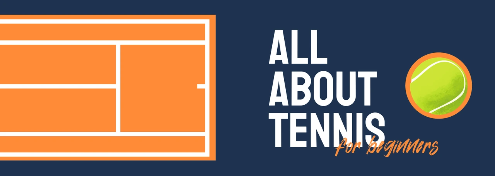

Publication design
Tennis
Booklet
Introducing tennis through a three-color booklet, explanatory diagrams, and hand-drawn illustrations.

Overview
- I created a small informational booklet about tennis for a publication design project.
- The booklet introduces court lines, scoring, tennis ball types, and beginner tips.
- The content is aimed at beginning tennis players; confirm this audience against the original brief.
Role and Challenge
- My role included publication layout and hand-drawn tennis ball illustrations.
- The project used only three colors.
- The design needed to organize several introductory topics within one small booklet.
Process and Decisions
- I chose a simple, labeled court as the focal point because it helps readers connect each court-line term with its location.
- I chose to align the illustrated ball on the opening spread with the cover cutout because it connects the outside of the booklet to the interior.
- I gave the large scorecard its own splash spread before explaining scoring in more detail.
- These decisions are supported by the existing project descriptions. Add sketches or earlier layouts to show how they developed.
Result
- The available portfolio exports show the cover and seven interior spreads.
- The booklet combines explanatory diagrams, hand-drawn illustrations, scoring information, and a final encouragement to play.
- No reader feedback or assessment results are recorded in the current portfolio; add verified feedback if available.
Reflection
- Draft reflection to confirm: the cover cutout makes the cover and opening spread depend on precise alignment; I would check that relationship with a physical print mockup.
- Next, I would ask a beginner to explain a court line and a scorecard using the booklet, then revise any confusing labels.
- Before finalizing, add one specific difficulty from the actual project and explain what I would change now.
Planned image sequence
Seven images selected from existing exports. Add an original sketch or earlier layout as an eighth image when available.
- Context · Cover and back cover
Introduce the booklet, its three-color palette, and tennis subject.
- Decision · Opening spread and cover cutout alignment
Explain how the interior tennis ball connects with the cutout; add a physical cover photo when available.
- Decision · Court lines spread
Show how labeled court lines connect terminology to location.
- Detail · Scoreboard splash spread
Show the large scorecard before the detailed explanation.
- Detail · Scorecard guide
Show how the next spread explains the scoring information.
- Detail · Hand-drawn tennis balls
Highlight my illustration contribution and the comparison of ball types.
- Result · Tips and next steps
Show how the booklet ends its instructional sequence with an invitation to play.